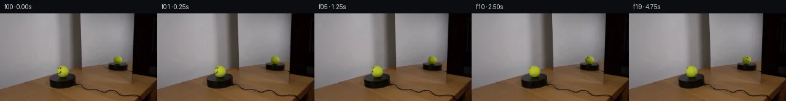

![首帧]()

Round 00
2026-11-05T12:52:26.508712+00:00像素候选变化代码 +196/−0inspection 更新
pixels 5331b82b7a634da9 · code 0cd967989def8082
查看本轮 generate.py 真实 diff
--- previous/generate.py
+++ current/generate.py
@@ -0,0 +1,196 @@
+"""Source-pixel spherical rotation, using only local NumPy/SciPy/Pillow."""
+from pathlib import Path
+import json
+import numpy as np
+from scipy.ndimage import map_coordinates, gaussian_filter
+from PIL import Image, ImageDraw
+from artifact_io import save
+
+ROOT = Path(__file__).resolve().parent
+SOURCE = np.asarray(Image.open(ROOT / 'first_frame.png').convert('RGB'), dtype=np.float64)
+H, W = SOURCE.shape[:2]
+Y, X = np.mgrid[:H, :W]
+PITCH = np.deg2rad(18.0)
+CP, SP = np.cos(PITCH), np.sin(PITCH)
+
+VIEWS = [
+ dict(name='direct', cx=101.95, cy=95.25, rx=10.15, ry=9.95, yaw=0.0, parity=1),
+ dict(name='mirror', cx=191.65, cy=76.00, rx=7.55, ry=6.80,
+ yaw=np.deg2rad(-145.0), parity=-1),
+]
+
+
+def normals(view, xx=X, yy=Y):
+ u = (xx - view['cx']) / view['rx']
+ v = -(yy - view['cy']) / view['ry']
+ r2 = u*u + v*v
+ # Maintain a finite normal at the antialiased outline.
+ sc = np.maximum(1.0, np.sqrt(r2))
+ u, v = u/sc, v/sc
+ w = np.sqrt(np.maximum(0.0, 1.0-u*u-v*v))
+ vx = view['parity'] * u
+ vy = CP*v + SP*w
+ vz = -SP*v + CP*w
+ c, s = np.cos(view['yaw']), np.sin(view['yaw'])
+ return np.stack((c*vx+s*vz, vy, -s*vx+c*vz), axis=-1), r2
+
+
+def project(world, view):
+ c, s = np.cos(view['yaw']), np.sin(view['yaw'])
+ vx = c*world[..., 0] - s*world[..., 2]
+ vy = world[..., 1]
+ vz = s*world[..., 0] + c*world[..., 2]
+ vv = CP*vy-SP*vz
+ zz = SP*vy+CP*vz
+ xx = view['cx'] + view['rx']*view['parity']*vx
+ yy = view['cy'] - view['ry']*vv
+ return xx, yy, zz
+
+
+def basis(u, v):
+ z = np.sqrt(np.maximum(0.0, 1.0-u*u-v*v))
+ return np.stack([np.ones_like(u), u, v, u*u, v*v, u*v,
+ z, v*z, v*v*v], axis=-1)
+
+
+def fit_diffuse(view):
+ u = (X-view['cx'])/view['rx']
+ v = -(Y-view['cy'])/view['ry']
+ r2 = u*u+v*v
+ b = basis(u,v)
+ # Exclude pale seam, dark ink, blended silhouette, and support pixels.
+ mask = ((r2 < .80) & (SOURCE[..., 1] > 70)
+ & (SOURCE[..., 2] < .31*SOURCE[..., 1])
+ & (SOURCE[..., 1] > .97*SOURCE[..., 0]))
+ for _ in range(5):
+ coef = np.linalg.lstsq(b[mask], SOURCE[mask], rcond=None)[0]
+ pred = np.einsum('hwk,kc->hwc', b, coef)
+ residual = SOURCE[..., 1]-pred[..., 1]
+ mask = ((r2 < .83) & (SOURCE[...,2] < .31*SOURCE[...,1])
+ & (SOURCE[...,1] > 55) & (residual > -12)
+ & (residual < 12))
+ pred = np.einsum('hwk,kc->hwc', b, coef)
+ # Clamp evaluation outside the fitted disk; no background is generated.
+ pred = np.clip(pred, [28,30,5], [220,230,85])
+ view['diffuse'] = pred
+ ratio = SOURCE / np.maximum(pred, 5)
+ # The material samples are used only on the source sphere hemisphere.
+ ratio = np.clip(ratio, .16, 4.8)
+ view['ratio'] = ratio
+ # Preserve measured silhouette and static light falloff exactly. Limit
+ # changes at its antialiased border by estimating source chroma coverage.
+ chroma = SOURCE[...,1]-SOURCE[...,2]
+ expected = np.maximum(15, pred[...,1]-pred[...,2])
+ coverage = np.clip((chroma-2)/(expected-2),0,1)
+ edge = np.clip((1.035-np.sqrt(r2))/.12,0,1)
+ alpha = np.where(r2 < .73, 1.0, coverage) * edge
+ alpha[r2 > 1.07] = 0
… diff truncated; 109 more lines …